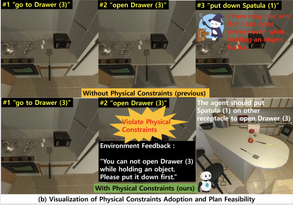
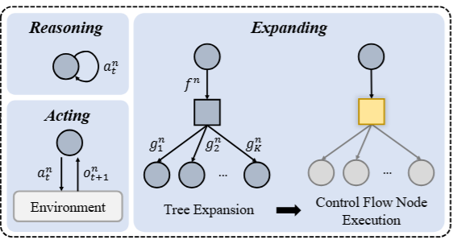
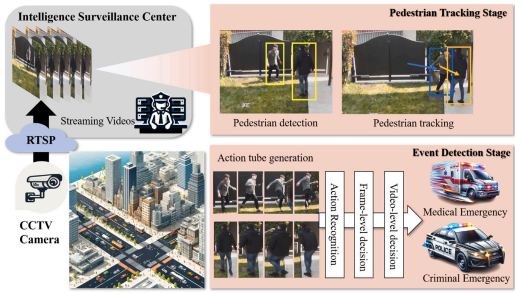
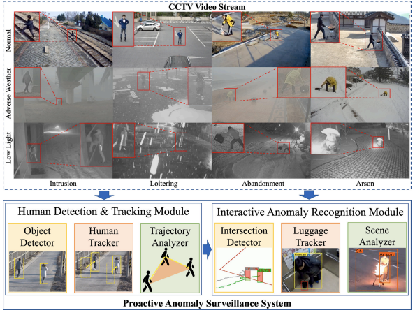

Hyungmin Kim
Principal Researcher, ETRI
Email: hyungmin (at) etri.re.kr

About
Hyungmin Kim is a Ph.D. Candidate in the Social Robotics Research Lab at ETRI(Electronics and Telecommunications Researh Institute) school, UST (University of Science and Technology), South Korea, UST (University of Science and Technology).

SPOC: Safety-Aware Planning Under Partial Observability And Physical Constraints
ICASSP 2026 (accepted)

ReAcTree: Hierarchical LLM Agent Trees with Control Flow for Long-Horizon Task Planning
AAMAS 2026 (accepted)

Elevating urban surveillance: A deep CCTV monitoring system for detection of anomalous events via human action recognition
Sustainable Cities and Society (2024, (IF 10.5, Q1 (98.37%)))

PASS-CCTV: Proactive Anomaly surveillance system for CCTV footage analysis in adverse environmental conditions
Expert Systems with Applications (2024, (IF 7.5, Q1 (94.8%)))
Education
University of Science and Technology(UST)
Ph.D. Candiate (Advisor: Dohyung Kim)
2022 - Present
M.S. in Artificial Intelligence (Advisor: Dohyung Kim)
2020 - 2022
Tech University of Korea(TUK)
B.S. in Mechatronics Engineering
2013 - 2020
Republic of Korea
Awards
Exellence Award of UST 2024 Research Paper Award (UST 연구 논문상 우수상) from University of Science and Technology(UST)
2024